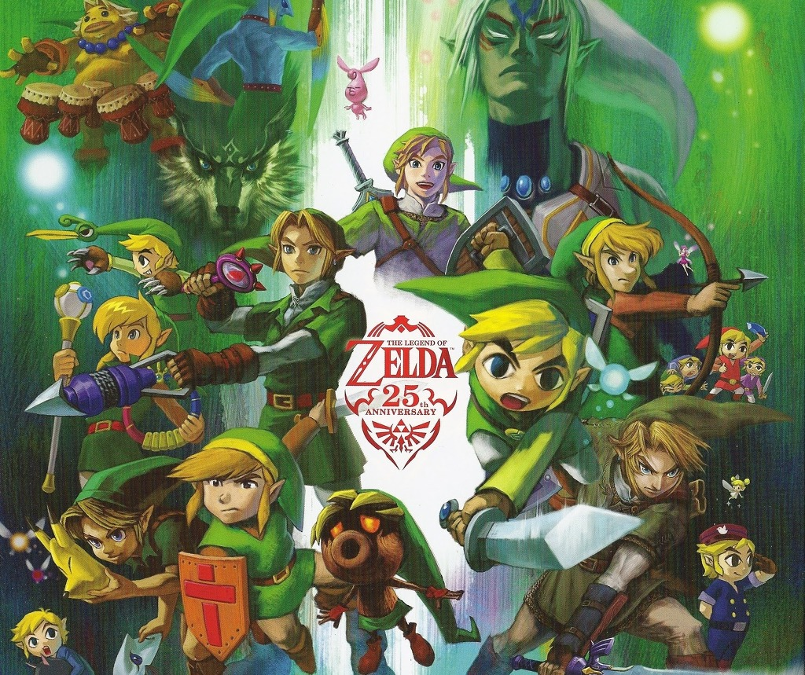

닌텐도가 자사의 대표적 콘솔 게임기인 패미컴으로 내놓은 액션 어드벤처 게임 '젤다의 전설'과 후속 시리즈.
닌텐도 콘솔을 사면 마리오와 젤다를 사야된다는 것은 이제 흔한 말이 되어 있을 정도로 닌텐도의 게임 시리즈에서 마리오와 함께 높은 인기를 자랑하는 시리즈이며, 비디오 게임 중 가장 높은 위상을 자랑한다.
닌텐도의 유명 IP들을 탄생시킨 미야모토 시게루가 제작한 탄탄한 스토리와 넓은 필드, 그리고 적절한 퍼즐 등으로 구성된 액션 어드벤처 게임의 대표격으로 세계 게임사에 가장 큰 영향을 끼친 게임 중 하나다.
서사가 있으며 필드 상에서 액션을 펼치지만 JRPG 특유의 요소들이 적고 퍼즐성이 강하다는 면에서 액션 어드벤처에 가까운 게임이다.
여기에 FPS적 요소나 여러가지 미니 게임도 포함되어 있다.